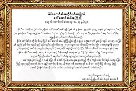

၅. နောက်ဆုံးသက်ရောက်မှု
၂၀၁၅ ခုနှစ်တွင် NLD အနိုင်ရပြီး နိုင်ငံရေးခေါင်းဆောင်အဖြစ် ပါဝင်ခဲ့သည်။ သူမ၏ ဘဝအတ္ထုပ္ပတိသည် မြန်မာနိုင်ငံ၏ လွတ်လပ်ရေးနှင့် လူ့အခွင့်အရေးအရေးပါမှုကို သိရှိရန် အရေးကြီးသော သမိုင်းစာတမ်းအဖြစ် သတ်မှတ်ခံရသည်။ သူမ၏ သတ္တိရှိမှု၊ သစ္စာရှိမှုနှင့် လူမှုအခွင့်အရေးကာကွယ်မှုအပေါ် စွမ်းအားများသည် ကမ္ဘာ့နိုင်ငံရေးသမိုင်းအတွင်း အလွန်ထင်ရှားသည့်အကြောင်းအရာတစ်ခုဖြစ်သည်။
၆. နိုင်ငံတော်အတွက် ဝတ္တရားနှင့် သစ္စာရှိမှု
ဒေါ်အောင်ဆန်းစုကြည်သည် သူမ၏ နိုင်ငံရေးအရေးပါမှုနှင့် လူထုအကျိုးအကျော်ကို စဉ်ဆက်မပြတ် သစ္စာရှိမှု၊ သတ္တိနှင့် သမာဓိတိုအပေါ် အခြေခံခဲ့သည်။ အကျဥ်းထောင်ချိန်များအတွင်း သိုမဟုတ် အိမ်ထောင်ချိန်တွင် တာဝန်အလေးထားမှုကြောင့် မိမိရဲ့ ကိုယ်ပိုင် အကျိုးအမြတ်ကို မရှာဖွေဘဲ၊ နိုင်ငံတော်အတွက် ဝတ္တရားရှိစွာ လှုပ်ရှားခဲ့သည်။ သူမသည် အမျိုးသားဒီမိုကရေစီအဖွဲကို ဦးဆောင်ရာတွင်လည်း ကိုယ်ပိုင်အကျိုးနှင့် စိတ်ကူးများကို နားထားပြီး လူထုအကျိုးအတွက် အစဉ်မပြတ် အရည်အသွေးမြင့်သော လုပ်ဆောင်မှုများကို အထူးအာရုံစိုက်ခဲ့သည်။
ဒီကဲ့သို သစ္စာရှိမှုနှင့် သတ္တိရှိမှုသည် သူမကို နိုင်ငံတော်ခေါင်းဆောင်အဖြစ် လူထုနှင့် နိုင်ငံတကာမှ ယုံကြည်စိတ်ချစွာ လွှမ်းမိုးနိုင်စေခဲ့သည်။ အကျဥ်းထောင်အချိန်အတွင်းလည်း သူမ၏ စည်းကမ်းနှင့် အကျင့်သစ္စာများ မပျက်မကွက်သိမ်းဆည်းနိုင်ခဲ့ခြင်းကြောင့်၊ နိုင်ငံရေးအကျိုးအတွက် တာဝန်ယူမှု၊ စွမ်းဆောင်ရည်နှင့် အကျင့်စံများကို အမြဲတမ်း ထိန်းသိမ်းထားနိုင်ခဲ့သည်။
ထိုအပြင် သူမ၏ သစ္စာရှိမှုနှင့် သတ္တိရှိမှုသည် လူထုအတွင်း အားပေးမှုနှင့် ယုံကြည်မှုကို တိုးတက်စေပြီး၊ နိုင်ငံရေးအရေးအခင်းများတွင် အမြဲတမ်း ဦးဆောင်နိုင်စွမ်းကို ဖော်ဆောင်ပေးခဲ့သည်။ ဒါက သူမကို မြန်မာနိုင်ငံ၏ ဒီမိုကရေစီလမ်းကြောင်းအတွက် အဓိက သမိုင်းသရုပ်ဆောင်တစ်ဦးအဖြစ် အထင်ကရစေခဲ့သော အချက်ဖြစ်သည်။

.jpg)
၇. နိုင်ငံတကာသက်ရောက်မှု
ဒေါ်အောင်ဆန်းစုကြည်သည် မြန်မာနိုင်ငံသာမက နိုင်ငံတကာတွင်လည်း လူ့အခွင့်အရေးနှင့် ဒီမိုကရေစီအရေးအတွက် သမိုင်းသရုပ်ဆောင်အဖြစ် မှတ်သားခံရသည်။ ၁၉၉၁ ခုနှစ်တွင် Nobel Peace Prize ဆုကို ရရှိခဲ့ပြီး၊ ဒီဆုသည် သူမ၏ သစ္စာရှိမှု၊ သတ္တိနှင့် လွတ်လပ်ရေးအတွက် ကြိုးပမ်းမှုတိုကို ကမ္ဘာလုံးဆိုင်ရာ အသိအမှတ်ပြုမှုအဖြစ် ဖော်ပြပေးခဲ့သည်။ သူမ၏ လှုပ်ရှားမှုများသည် နိုင်ငံတကာအဖွဲအစည်းများ၊ မီဒီယာများနှင့် အခြားနိုင်ငံများအတွက် လူ့အခွင့်အရေးအရေးပါမှုကို သတိပေးရာတွင် အရေးကြီးခဲ့သည်။ အကျဥ်းထောင်ချိန်အတွင်း သူမ၏ သံယောဇဉ်မပြတ်မှုနှင့် သစ္စာရှိမှုသည် နိုင်ငံတကာတွင် အထင်ကရသရုပ်ဖော်မှုတစ်ခုအဖြစ် ရှိနေခဲ့သည်။
.jpg)
.jpg)